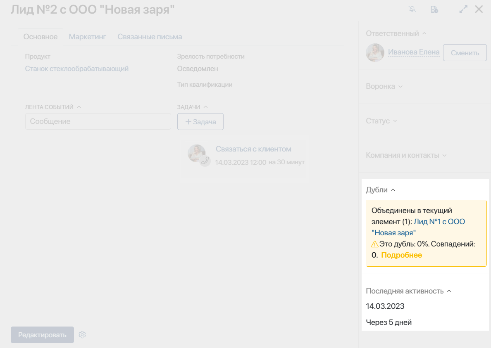

В карточке лида хранится вся важная информация о потенциальном клиенте: наименование компании, контактное лицо, текущие задачи, статус и т. д.
По умолчанию карточка состоит из боковой панели и трёх вкладок: Основное, Маркетинг и Связанные письма.
Вы можете изменить внешний вид карточки, например, добавить или удалить вкладки и поля.
Вкладка «Основное»
Лента событий
В левой части карточки отображается Лента событий. В ленте можно обсудить вопросы с коллегами и отследить историю работы над лидом.
Кроме того, в ленте хранятся записи входящих звонков от контактов, указанных в карточке лида, их продолжительность и дата. Запись можно прослушать и оставить под ней краткий комментарий.
Обратите внимание, в некоторых версиях ELMA365 отображение записей входящих звонков по умолчанию выключено.
|
Задачи по лидам
Справа от ленты событий показаны текущие и завершённые задачи по лидам. Чтобы запланировать новую задачу CRM, нажмите на кнопку + Задача и выберите нужное действие из выпадающего списка — Звонок, Встреча, Вебинар, Письмо или Задача.
Подробнее о работе с задачами по лидам читайте в статье «Задачи CRM».
Детали лида
Над лентой событий и задачами представлена основная информация о лиде. Дополнительные данные о контактах, компании и сделке, в которую квалифицирован лид, отображаются на боковой панели.
Вы можете дополнить или изменить детали лида. Для этого нажмите кнопку Редактировать. В открывшейся форме можно:
- указать Продукт, в котором заинтересован клиент. Если продукты компании созданы в разделе Продуктовый каталог, на форме лида также настраивается выбор продукта из каталога;
- добавить Источник лида или Маркетинговое мероприятие, с которого привлечён лид;
- выбрать Зрелость потребности: Осведомлён, Заинтересован, Горящая потребность;
- добавить компанию;
- указать контакт.
В карточке также отображается поле Тип квалификации. После того как лид будет квалифицирован, в этом поле вы увидите способ квалификации:
- с добавлением сделки и компании;
- с добавлением компании.
Подробнее об этом читайте в статье «Работа со статусами. Квалификация лида».
Кроме того, вы можете добавлять или удалять поля на карточке. Подробнее о том, как это сделать, читайте ниже, в подразделе «Изменить внешний вид карточки».
Вкладка «Маркетинг»
На вкладке Маркетинг указаны Источник лида и Маркетинговое мероприятие, которое помогло привлечь клиента.
Кроме того, здесь отображаются данные, собранные с помощью UTM-меток.
Свойства, обозначающие UTM-метки, добавлены в контекст приложения Лиды по умолчанию:
- utm_source — источник переходов;
- utm_medium — тип трафика;
- utm_campaign — название рекламной компании.
Вы можете ими воспользоваться и отследить, откуда пришло наибольшее количество потенциальных клиентов, а также проанализировать работу маркетологов.

Вкладка «Связанные письма»
Если в разделе Почта вы подключили свою электронную почту, вы можете вручную связывать письма с лидами.
Для отображения писем на вкладке используется виджет Связанные письма. Пользователи, у которых есть права на просмотр элемента, смогут увидеть всю переписку с клиентом.
Нажав на текст или заголовок письма в карточке, вы можете прочесть его содержание полностью.

Обратите внимание, если в карточке не отображаются Вкладка и виджет Связанные письма, их необходимо добавить на форму вручную. Подробнее о том, как это сделать, читайте в статье «Шаблон формы».
Боковая панель карточки
По умолчанию боковая панель отображается справа на всех вкладках карточки лида. Здесь вы можете посмотреть информацию об ответственном, воронке, статусе лида, найденных дублях и последней активности с элементом.
Ответственный за лид
Если при создании лида вы не указали ответственного менеджера, сделать это можно позднее, открыв карточку лида.
Для этого воспользуйтесь кнопками:
- Взять в работу — нажавший на эту кнопку сотрудник сам становится ответственным за работу с лидом;
- Назначить — нажмите на эту кнопку и в появившемся окне выберите пользователя, который будет отвечать за лид.
После того, как определен ответственный, статус лида Новые изменится на Обработка.
Воронка лида
На правой панели отображается воронка, в которой находится лид.
Пользователи с правом доступа на редактирование могут переместить лид в другую воронку, нажав Изменить. Эта возможность доступна, если администратор системы создал несколько воронок и разрешил перемещать элементы в настройках виджета Воронка. Подробнее об изменении воронки лида читайте в статье «Перенести лид в другую воронку».
Статус лида
На боковой панели отображается текущий статус лида.
Если в настройках воронки разрешена ручная смена статуса, пользователи с правом доступа на редактирование могут присвоить лиду другой статус.
Для этого нажмите Изменить и выберите, в какой статус перевести элемент.

По умолчанию у лидов могут быть следующие статусы:
- Новые — начальный статус созданного лида;
- Обработка — менеджер работает с клиентом, подготавливая его к сделке;
- Квалифицирован — квалифицируйте лид, если клиент проявляет высокую заинтересованность в продукте. При этом вы можете создать новую сделку или компанию;
- Неквалифицирован — поставьте этот статус, если продажа не состоялась и клиент утратил интерес.
Изменение статуса лида фиксируется. Дата смены каждого статуса записывается в ленту лида. В его карточке на канбан-доске отображается, сколько дней назад элементу был присвоен текущий статус. Подробнее об этом читайте в статье «Работа со статусами. Квалификация лида».
Вы также можете перенести лид в другую воронку, если администратор разрешил смену воронки в настройках виджета Статус элемента приложения. Подробнее читайте в статье «Перенести лид в другую воронку».
Компания и контакты
Информация о контрагенте, контактном лице и сделке, в которую квалифицирован лид, отображается на боковой панели его карточки. Если компания и контакт не выбраны из существующих записей, вы можете добавить эти данные. Для этого создайте элемент, нажав на кнопку плюс или нажмите Редактировать, чтобы выбрать существующую запись в связанном приложении.
Дубли
По умолчанию на карточке лида размещён виджет Дубли объекта. Если вы включили правила поиска дублей для приложения Лиды, в виджете будут отображаться найденные совпадения или объединённые с текущим лидом элементы.
Подробнее об опции выявления элементов с совпадающими данными читайте в разделе «Дубли в разделе CRM».

Последняя активность по лиду
В виджете Последняя активность на панели справа показывается информация о том, когда пользователи запланировали работу с лидом или взаимодействовали с его карточкой в последний раз. Данные записываются следующим образом:
- сначала показывается дата начала последней запланированной задачи CRM и количество дней, оставшихся до её выполнения;
- если все задачи по лиду выполнены, отображается дата последнего внесённого изменения в карточку, например, дата оставленного в ассоциированной ленте комментария или изменения статуса элемента.
Отображение последней активности позволяет отследить лиды, по которым долгое время не совершалось никаких действий. Например, вы можете создать бизнес-процесс для уведомления ответственного пользователя или для закрытия лида, если с элементом в течение какого-то времени не взаимодействовали менеджеры.
Изменить внешний вид карточки
При необходимости вы можете изменять стандартный вид карточки лида. Например, перемещать, добавлять или удалять поля, указать, какие из них обязательны для заполнения или доступны только для чтения.
начало внимание
Настраивать формы приложения Лиды могут только пользователи, включённые в группу Администраторы.
конец внимание
Для перехода в режим редактирования, нажмите на значок шестерёнки справа от названия приложения и в меню выберите пункт Настройка формы.
Откроется окно, в котором вы увидите список всех полей, используемых на карточке.
Переключайтесь между вкладками, чтобы изменить внешний вид карточки в режиме создания, просмотра или редактирования. Подробнее об этом можно прочитать в статье «Расширенный режим настройки форм».
Данные настройки применяются ко всем карточкам во всех воронках продаж.